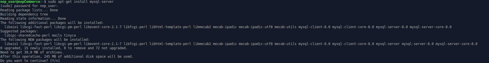
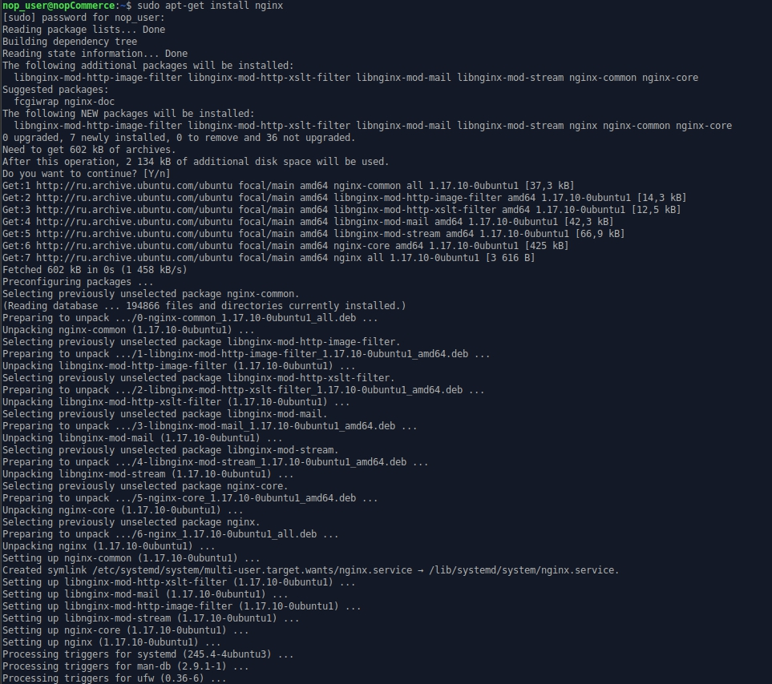
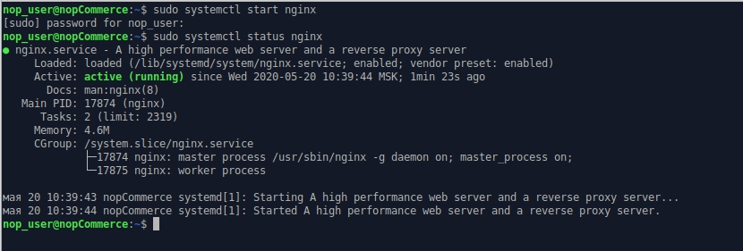
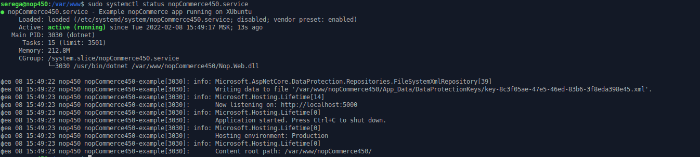

Installing on Linux
This chapter describes how to install the nopCommerce software on Linux system on the example of Xubuntu 20.04:
Install and configure software
Before installing .NET Core, we'll need to register the Microsoft key and install the required dependencies. This needs to be done once per machine.
Register Microsoft key and feed
Open a terminal and run the following commands:
wget https://packages.microsoft.com/config/ubuntu/20.04/packages-microsoft-prod.deb -O packages-microsoft-prod.deb
sudo dpkg -i packages-microsoft-prod.deb

Install the .NET Core Runtime
Update the products available for installation, then install the .NET runtime:
sudo apt-get update
sudo apt-get install -y apt-transport-https aspnetcore-runtime-7.0
Note
If you have an error, see the detailed information on the Install the .NET SDK or the .NET Runtime on Ubuntu page.
You can see all installed .Net Core runtimes by the following command:
dotnet --list-runtimes
Install MySql Server
Install the MySql server 8.0 version:
sudo apt-get install mysql-server

By default, the root password is empty; let's set it:
sudo /usr/bin/mysql_secure_installation

Note
If you have a problem with configuring root password on your MySql server, please read the following articles: How to Reset the Root Password and MySQL Error: 'Access denied for user 'root'@'localhost'.
Install nginx
Install the nginx package:
sudo apt-get install nginx

Run the nginx service:
sudo systemctl start nginx
and check its status:
sudo systemctl status nginx

To configure nginx as a reverse proxy to forward requests to your ASP.NET Core app, modify /etc/nginx/sites-available/default. Open it in a text editor and replace the contents with the following:
# Default server configuration
#
server {
listen 80 default_server;
listen [::]:80 default_server;
server_name nopCommerce.com;
location / {
proxy_pass http://localhost:5000;
proxy_http_version 1.1;
proxy_set_header Upgrade $http_upgrade;
proxy_set_header Connection keep-alive;
proxy_set_header Host $host;
proxy_cache_bypass $http_upgrade;
proxy_set_header X-Forwarded-For $proxy_add_x_forwarded_for;
proxy_set_header X-Forwarded-Proto $scheme;
}
# SSL configuration
#
# listen 443 ssl default_server;
# listen [::]:443 ssl default_server;
#
# Note: You should disable gzip for SSL traffic.
# See: https://bugs.debian.org/773332
#
# Read up on ssl_ciphers to ensure a secure configuration.
# See: https://bugs.debian.org/765782
#
# Self signed certs generated by the ssl-cert package
# Don't use them in a production server!
#
# include snippets/snakeoil.conf;
}
Get nopCommerce
Create a directory:
mkdir /var/www/nopCommerce
Download and unpack nopCommerce:
cd /var/www/nopCommerce
sudo wget https://github.com/nopSolutions/nopCommerce/releases/download/release-4.60.2/nopCommerce_4.60.2_NoSource_linux_x64.zip
sudo apt-get install unzip
sudo unzip nopCommerce_4.60.2_NoSource_linux_x64.zip
Create couple directories to run nopCommerce:
sudo mkdir bin
sudo mkdir logs
Change the file permissions:
cd ..
sudo chgrp -R www-data nopCommerce/
sudo chown -R www-data nopCommerce/
Create the nopCommerce service
Create the /etc/systemd/system/nopCommerce.service file with the following contents:
[Unit]
Description=Example nopCommerce app running on Xubuntu
[Service]
WorkingDirectory=/var/www/nopCommerce
ExecStart=/usr/bin/dotnet /var/www/nopCommerce/Nop.Web.dll
Restart=always
# Restart service after 10 seconds if the dotnet service crashes:
RestartSec=10
KillSignal=SIGINT
SyslogIdentifier=nopCommerce-example
User=www-data
Environment=ASPNETCORE_ENVIRONMENT=Production
Environment=DOTNET_PRINT_TELEMETRY_MESSAGE=false
[Install]
WantedBy=multi-user.target
Start the service:
sudo systemctl start nopCommerce.service
Check the nopCommerce service status:
sudo systemctl status nopCommerce.service

Restart the nginx server:
sudo systemctl restart nginx
Now that everything is ready, you can proceed to install and configure the store.
Installation process
The further installation process for nopCommerce is the same as the installation process on Windows; you can see the instruction following this link.
Troubleshooting
Gdip
If you have a problem with loading images in the RichText Box (The type initializer for 'Gdip' threw an exception), just install the libgdiplus library:
sudo apt-get install libgdiplus
SSL
If you want to use SSL on your site, don't forget to set the UseProxy setting to true in the appsettings.json file.